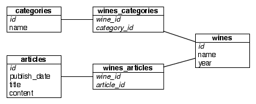
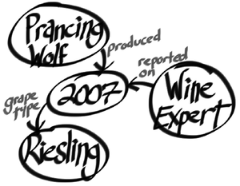

{% include JB/setup %}
{% raw %}
<div>

<h2 id="N18233" class="calibre18">7.1 Neo4J Is Whiteboard Friendly</h2>
<p id="N18237" class="calibre5">
      Imagine you must create a wine suggestion engine where wines have different varieties, regions, wineries, vintages, and designations. Perhaps you need to keep track of articles by authors describing wines. Perhaps you want to let users track their favorites.
    </p>
<div class="figure" id="fig.neo4j.winesuggestioninrel">
<div class="calibre2">

</div>
<div class="figurecaption">
<hr class="calibre28"/>Figure 30. Wine suggestion schema in relational UML</div>
</div>
<p id="N1825E" class="calibre5">
      A relational model may create a category table and a many-to-many relationship between a single winery’s wine and some combination of categories and other data. But this isn’t quite how humans mentally model data. Compare these two figures: Figure 30, <a href="#fig.neo4j.winesuggestioninrel">​<em class="calibre6">Wine suggestion schema in relational UML</em>​</a> and Figure 31, <a href="#fig.neo4j.winesuggestiongraph">​<em class="calibre6">Wine suggestion data on a whiteboard</em>​</a>. There’s an old saying in the relational database world: <span class="calibre6">on a long enough timeline, all fields become optional</span>. Neo4j handles this implicitly by providing values and structure only where necessary. If a wine blend has no vintage, instead add a bottle year and point the vintages to the blend node. There is no schema to adjust.
    </p>
<p id="N1826A" class="calibre5">
      Over the next three days we’ll learn how to interact with Neo4j through a console and then through REST and search indexes. We’ll work with some larger graphs with graph algorithms. Finally, on Day 3, we’ll take a peek at the enterprise tools Neo4j provides for mission-critical applications, from full ACID-compliant transactions to high-availability clustering and incremental backups.
    </p>
<div class="figure" id="fig.neo4j.winesuggestiongraph">
<div class="calibre2">

</div>
<div class="figurecaption">
<hr class="calibre28"/>Figure 31. Wine suggestion data on a whiteboard</div>
</div>
<p id="N1827E" class="calibre5">
      In this chapter, we’ll use the Neo4j 1.7 Enterprise edition. Most of the actions we perform can actually use the GPL Community edition, but we’ll require some enterprise functionality for Day 3: high availability.
      </p>
<script src="scripts/book_local.js" type="text/javascript" class="calibre3"/>
</div>

{% endraw %}

